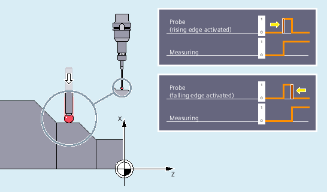
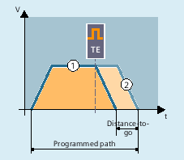

The trigger for the measurement is the trigger event programmed in the measuring block, i.e. either the rising (0 → 1) or falling (1 → 0) edge of probe 1 or 2:
When the trigger event occurs, the positions of all traversed path and positioning axes of the block are recorded and stored in system variables.
| Note |
If a geometry axis is programmed in a measuring block, the measured values are stored for all current geometry axes. If an axis participating in a transformation is programmed in a measuring block, the measured values are stored for all axes participating in this transformation. |
With MEAS or MEASF, the traversing motions of the block are decelerated in a defined manner after the trigger event occurs (measuring with delete distance-to-go), with MEAW they are continued until the end (measuring without delete distance-to-go):
① | Measuring with delete distance-to-go (MEAS/MEASF) |
② | Measurement without delete distance-to-go (MEAW) |
The measured values of the axes acquired by probes can be read through the following system variables in the part program and in synchronized actions:
System variable | Meaning |
|---|---|
$AA_MM[<Axis>] | Probe measured value in the machine coordinate system |
$AA_MW[<Axis>] | Probe measured value in the workpiece coordinate system |
If an evaluation is required in the program, whether a probe has been deflected or has switched, the status can be queried through the following system variables:
System variable | Meaning | Data type | Value | |
|---|---|---|---|---|
$A_PROBE[<n>] | Deflection state of the probe | INT | 0 | Probe not deflected. |
1 | Probe deflected. | |||
$AC_MEA[<n>] | Switching status of the probe $AC_MEA[<n>] is automatically reset at the beginning of a measurement. | INT | 0 | Probe has not switched |
1 | Probe has switched. | |||